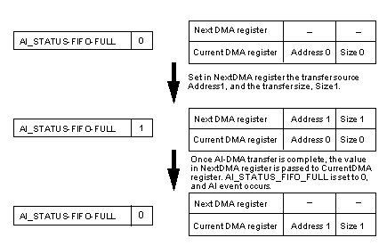
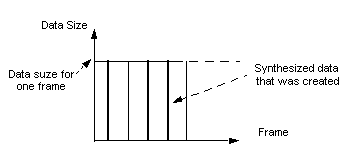
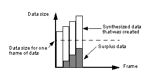
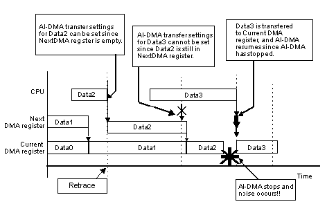
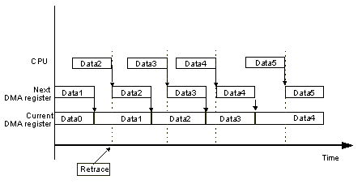
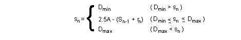
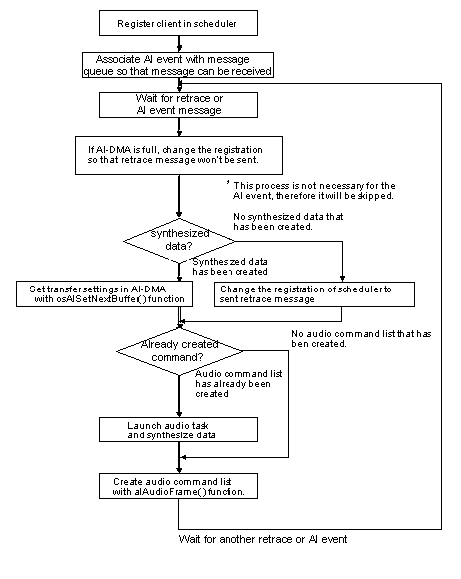

Figure 5.1 Process Flow for the Creation of Data by the Audio Manager
The N64 uses the CPU and RSP to create audio data, and it uses AI-DMA to transfer that data to the audio interface (AI) for reproduction. Interrupting the data during reproduction generates noise. Therefore you must create and DMA-transfer the PCM data in such as way that the data will not be interrupted. The primary role of the audio manager is to prepare the data so interruptions do not occur.
Following is a simple explanation of the flow for audio playback on the N64. The construction of the AI-DMA registers and the different types of audio managers are also explained. Details about the NuSystem audio managers are provided in Sections 5.2 and 5.3. The explanations here focus on the nualsgi and nualsgi_n libraries, but the fundamentals of the audio managers also hold for the mus library. The process of creating audio data by the audio manager is illustrated in Figure 5.1.
Figure 5.1 Process Flow for the Creation of Data by the Audio Manager
As shown, the audio command list is created by the CPU and then used as the basis for the synthesis of waveform data in the RSP. The synthesized data is then transferred to the DAC using AI-DMA to play the audio.
AI-DMA is the process used for transferring PCM data via the AI to the DAC. The registers for the AI-DMA transfer origin address and transfer size are configured as a 2-stage FIFO. For this reason, the address and size for the next AI-DMA transfer can be set while the first transfer is taking place. The state of these registers can be obtained from the AI status register.
Shown in Figure 5.2, the NextDMA register is the first-stage register, and the CurrentDMA register is the second-stage register for the AI-DMA transfer address and transfer size (i.e., the data from the CPU is written to NextDMA). When AI-DMA is stopped, the transfer address and transfer size in NextDMA (Address0 and Size0) are sent unchanged to CurrentDMA, and the AI-DMA transfer is started.

Figure 5.2 Status Change in the AI-DMA Register
If during the AI-DMA transfer, the transfer address, Adress1, and the transfer size, Size1, are set in the NextDMA register, then both stages are in the FULL state. In other words, both the NextDMA register and the CurrentDMA register hold transfer settings. In this case, the AI_STATUS_FIFO_FULL bit is set to 1. Once the transfer from Adress0 is completed, the values in the NextDMA register are sent to the CurrentDMA register, and the AI-DMA transfer continues. Also, the AI_STATUS_FIFO_FULL bit is set to 0. An AI event is generated when the AI_STATUS_FIFO_FULL bit changes from 1 to 0.
Table 5.1 lists the N64OS functions used to control the three above-mentioned AI-DMA registers.
| Register | Operation | Control Function |
|---|---|---|
| Next DMA register | write | osAiSetNextBuffer |
| Current DMA register | read | osAiGetLength |
| AI Status register | read | osAiGetStatus |
In order for the audio manager to make the best use of this AI-DMA structure, is to have the AI_STATUS_FIFO_FULL bit set to 1. In other words, transfer data should be set in both the NextDMA register and the CurentDMA register. In principal, if you decide on the size of the synthesized waveform data, then you can calculate the playback time, and determine the interval for creation of waveform data. Conversely, if you decide on the interval for creation of waveform data, then you can determine the size of the waveform data. Therefore, it is a good idea to set the transfer settings during this interval.

Figure 5.3 An Ideal Transition of Data During Audio Playback
aking the above into consideration, one can think of two types of audio managers, each using a different procedure. In one procedure, the waveform data is created for every retrace so that the size of the PCM data is equal to one frame's worth of data. In the other procedure, AI events are utilized, and the size of the waveform data is decided arbitrarily. NuSystem supports both procedures (the latter procedure has been supported since NuSystemVer2.00). Sections 5.2 and 5.3 provide detailed explanations about both of these types of audio. Please note that as of February 1999, the mus library only supports the former procedure.

In game applications, many processes are done in units of retraces. The Audio Manager takes advantage of this fact, creating one frame's worth of PCM data and setting the AI-DMA register transfer settings at a retrace message.
However, in reality, the audio manager thread does not always switch with strictly the same timing as the retrace. There are also restrictions on the creation of data: the audio microcode requires data in units of 16 samples, and the n_audio microcode requiring data in units of 184 samples. For these reasons, the created data will be larger than the theoretical values. If this is not controlled, surplus data will be generated in every frame, and the amount will continue to build up without limit. (See Figure 5.4)

Figure 5.4 Data Changes During the Actual Audio Playback
(Note: Size of the created data is unlimited)
To prevent this, controls are placed on the size of the created data, either by making sure the size of the surplus data does not exceed some fixed amount, or by making sure FIFO is not empty in any 1 frame. (See Figure 5.5)

Figure 5.5 Data Changes During the Actual Audio Playback
(Note: Size of the created data is limited)
The controls must be defined in units of 16 or 184, due to restrictions on the number of samples. Since the AI-DMA registers have a 2-stage FIFO structure, you must estimate 2 frames ahead and control the size of the data. The audio manager operates on each retrace. Setting of a transfer in the NextDMA register is also done on each retrace. If the AI-DMA registers are both full at the time of a retrace, the transfer cannot be set in the NextDMA register until 1 frame later. However, when the total amount of data set for transfer in the AI-DMA registers is only 1 frame in size, the data transfer will end before the next retrace, and as a result noise will be generated (see Figure 5.6).

Figure 5.6 AI-DMA State Changes when Noise Occurs
To get around this problem, the size of the created data is adjusted so that the timing of the end of the CurrentDMA transfer differs from the timing of the retrace, when the data pertaining to the next transfer is set in the NextDMA register (see Figure 5.7).

Figure 5.7 AI-DMA State Transitions with Data Size Adjusted so that no Noise is Generated
NuSystem uses the audio manager that only utilizes retraces if you use the nuAuMgrInit function (or the nuAuInit function).
With this audio manager, the control set point for each retrace is a margin of 25% of 1 frame (i.e., when there is a total of 1.25 frame's worth of data set for transfer in the AI-DMA registers). With regard to control over the size of the waveform data, the minimum size is 1.0 frame's worth of data and the maximum size is 1.5 frame's worth of data.
Following is a description of the formula used to determine these conditions. The total size of data not yet transferred from the AI-DMA registers is equal to the sum of the values in the two registers (NextDMA register value + CurrentDMA register value). This can be determined by summing the value obtained by the osAiGetLength function with the value last set in the NextDMA register.
Assume a data size A for 1 frame's worth of data at a given frequency. For n frames, data of size sn is created. When rounded up to become a multiple of 16 or 184 and normalized, this data size becomes Sn. The value obtained by the osAiGetLength function is rn, and the last value set in the NextDMA register is Sn-1. Given these parameters, the error Deltanbetween the total value of the data in the AI-DMA registers and 1.25 frame's worth of data is calculated thusly:
From this, you can calculate snas follows:
When the restricting minimum and maximum values for snare set at Dminand Dmax,then su takes one of the following three values, depending on the situation:

From this calculation, Sn is then obtained by rounding up sn to a multiple of 16 or 184 then normalized. Note that when you use the n_audio microcode and play audio back at a frequency of less than 11025Hz, then the amount of data in 1 frame becomes 184, which is the same as the control set point, so the minimum and maximum values need to be slightly adjusted.
The flow of this audio manager is shown in Figure 5.8.

Figure 5.8 Process Flow for Audio Manager
(Manager that creates data for one frame per retrace)
Initialization is performed by the nuAuMgrInit function (called from inside the nuAuInit function). The nuAuMgrInit function performs the following processes:
The function set by nuAuPreNMIFuncSet() is called in every frame after the PreNMI message. When the nuAuInit function is used, the nuAuPreNMIProc function is set at the time of initialization, and the audio fades out on a PreNMI message.

An AI event is generated when the AI-DMA registers change from the full state to the non-full state. A transfer can be set in the AI-DMA registers at this time without fail. Thus, if you use the opportunity of AI events to set the transfer of PCM data, there will be no interruption in AI-DMA. Since you can fix the size of the created synthesized waveform data, you can optimize the buffer and do not need to control the size of the waveform data (as is the case when only retrace is used.) In addition, you need only two waveform data buffers -- the number of AI-DMA registers in which a transfer can be set.
However, as explained in the preceding section, you cannot specify a value equal to exactly one frame, so the timing of AI events will be off in every frame. In other words, the timing of the activation of an audio task will be different in every frame, so it is difficult to time the process to when the RSP is free. (You can control the timing to a certain extent by adjusting the size of the synthesized waveform data, but the precision of control drops off considerably when audio is played back at a low frequency. For this reason, NuSystem does not adjust the size of the waveform data.)
NuSystem uses the audio manager that utilizes AI events when you make use of the nuAuMgrInitEx function (or the nuAuInitEx function).
As mentioned above, AI events are generated when the AI-DMA registers change from the full to the non-full state. Conversely, if the AI-DMA registers are not in the full state, then an AI event will not be generated. For this reason, NuSystemuses the retrace message up until an AI event is generated, and then stops the retrace message and begins to use the AI event (message transmission from the scheduler itself is stopped). In other words, the retrace message is used as a "primer" for the AI event. However, if an AI event is being used and a transfer cannot be set in the AI-DMA registers, then no AI event will be generated, so the system will go back to using retrace messages. The flow for this type of audio manager is shown in Figure 5.9.

Figure 5.9 Process Flow for Audio Manager
(Audio Manager making sure FIFO is not empty using AI Events)

If you are going to customize the audio manager, you need to have a good understanding of the mechanism of action of the audio library. Following is a description of the operations of the audio library included in the N64OS, and an explanation about optimizing memory.
In order to play and stop SE and sequences from the application, N64OS audio library functions are called from NuSystemfunctions.
For example, to play a sequence, you call the nuAuSeqPlayerPlay function, and then the alCSPlay function is called from within this function. However, the sequence does not actually begin playing when this function is called. Rather, the alCSPlay function simply adds the sequence as an "event" for playback in the sequence player's event buffer. The sequence begins being played back later, when the sequence player begins to process this event.
The sequence player is registered in the synthesize driver at the time of initialization. The audio manager calls the synthesize driver (in essence, the AudioFrame function or the n_alAudioFrame function) at every retrace, and the synthesize driver executes the sequence player. The sequence player creates the audio command list via the synthesize driver. Figure 5.10. shows the flow of this process. The flow is the same for SE.
The number of sequence player event buffers is specified by the maxEvents member of the ALSeqpConfig structure, which is specified as an argument in nuAuSeqPlayrInit, the function that initializes the sequence player. This maxEvents number of event buffers is reserved from the audio heap region. (In the case of the sound player, the number is obtained from the nuAuSndPlayrInit function.)
Note: If the application has requested more than the maxEvents number of events, any event beyond the maxEvents number will be ignored.

Figure 5.10 Process Flow of Sequence Played Event
Following is a discussion about the size of the audio heap for the synthesize driver and the sequence, and sound players.
The synthesize driver is initialized by the allInit function called from the nuAuMgrInit function. Among the member variables of the ALSynConfig structure passed at this time are the following variables related to the heap:
| maxPVoice | Number of physical voices |
| maxUPdates | Number of updated internal parameters |
| FxType | Effect type |
The sequence player is initialized by the alCSPNew function. Among the member variables of the ALSeqpConfig structure passed at this time are the following variables related to heap memory:
| maxChannels | Maximum number of channels |
| maxVoices | Maximum number of voices |
| maxEvents | Number of events |
The sound player is initialized by the alSndpNew function. Among the member variables of the ALSndpConfig structure passed at this time are the following variables related to heap memory:
| maxSounds | Maximum number of sounds |
| maxEvents | Maximum number of events |
These structure member variables can be used to calculate the heap size by using the following formulas.
144 + maxPVoice * 432 + maxUPdates * 32 + FxTypeThe size entered for FxType differs depending on the type of effect, as shown below:
| AL_FX_NONE | 0 |
| AL_FX_SMALLROOM | 8192 |
| AL_FX_BIGROOM | 8224 |
| AL_FX_ECHO | 1640 |
| AL_FX_CHORUS | 304 |
| AL_FX_FLANGE | 304 |
maxChannels * 16 + maxVoices * 64 + maxEvents * 32
maxSounds * 48 + maxEvents * 32
The above three calculations concern the size of the audio heaps secured inside the audio library. The following regions are secured from NuSystem functions:
4. Audio command list buffer
5. Audio buffer
6. PI-DMA buffer (waveform data buffer)
7. Sequence data buffer
8. Bank file buffer
The sum total of all 8 items gives the required size for the overall audio heap. Note that the alHeapAlloc function uses 16 byte alignment when a heap is secured from the audio heap.
Customization should proceed with an understanding of the way that audio is played back as described above.
As for the optimization of memory, the minimal values can be determined using the calculations mentioned above. However, there are two parameters which you cannot obtain with the calculations: the size of the audio command list buffer (4) and the size of the PI-DMA buffer (6).
Item #4 (audio command list buffer) is passed to the audio microcode. The size of this buffer changes, depending on the playback frequency, the contents of the sequence, the number of SE, and the method in which the audio is controlled. However, 2 Kbytes are normally sufficient.
The PI-DMA buffer holds the voice data needed when the audio microcode synthesizes waveforms. The PI-DMA data is transferred from ROM and temporarily stored in RDRAM in the buffer. A number of these buffers are reserved and managed individually as cache. By storing data in RDRAM for a fixed frame interval, the number of PI-DMA transfers is reduced. If there are not enough of these buffers, the needed waveform data cannot be transferred from ROM. When this occurs, the data at the head of the PI-DMA buffer is utilized, and the sound becomes strange. Moreover, if the size of each PI-DMA buffer is too small, then the number of DMA transfers will increase, and performance will decline. For these reasons, the number and size of the PI-DMA buffers have a large effect on performance and memory consumption. The best thing to do is test different values to find the optimal value for the given application.
With NuSystem, the size of each PI-DMA buffer is set slightly large at 1 Kbyte so audio can be played back with no problems even at 44.1 kHz. If the audio will be played back at low frequencies, then the buffer size can be set to 768 or 512 bytes in order to consume less of the heap. A buffer size of around this value is standard. Otherwise, you can adjust the value based on the sequence data and playback frequency. To perform the adjustment, change the values of the following variables before you call the nuAuMgrInit function (or the nuAuInit function):
nuAuDmaBufNum The number of PI-DMA buffers nuAuDmaBufSize The size of one PI-DMA buffer
When you initialize using the nuAuInit function, relatively large-sized memory regions are reserved from the heap for the audio buffer (4096 bytes x 3 -- or 4096 bytes x 2 when the audio manager is using AI events) and for the sequence data buffer (32 Kbytes x 2). If these values are appropriately adjusted, the size of the heap region can be decreased. The nuAuInit function and the nuAuMgrInit function return the size of the heap currently being used. You can also obtain the size of the heap with the nuAuHeapGetUsed function. You can thus use these functions to set the heap to an appropriate value.
As previously mentioned, the number and size of the PI-DMA buffers is closely related to this effort. But as a final measure to boost performance, you can also decrease both the sampling rate and the playback frequency of the voice data. When this is done, the amount of data is reduced, so the volume of calculations is also reduced. Try making various adjustments to meet the situation at hand.
Useful debug variables have been prepared for the NuSystem debug audio manager in order to tune various parameters, such as maximum values for performance and the audio command list. When the buffer number or buffer size is insufficient, this history is kept in flags. The variables are listed in the following table.
| Variable Name | Description | ||||||||||||
|---|---|---|---|---|---|---|---|---|---|---|---|---|---|
| nuAuDebFlag | Debug flag. Controls inside the audio manager. Specified with the following flags (or can be specified)
|
||||||||||||
| nuAuDebStatus | Audio playback error flags
|
||||||||||||
| nuAuDebAcmdLenMax | Maximum value of audio command list. The value is measured, and the nuAuAcmdLen function is optimized. | ||||||||||||
| nuAuDebDmaCount | The number of actual PI-DMA transfers that occurred from among the PI-DMA requests made by the alAudioFrame function. Since the PI-DMA buffer operates like cache, the actual PI-DMA number is less than the requested number. This variable is mainly used when optimizing the PI-DMA buffer size nuAuDmaBufSize. | ||||||||||||
| nuAuDebDmaMax | The maximum number of PI-DMA transfers that will actually occur during the measurement interval from among the PI-DMA requests made in one call of the alAudioFrame function. This variable is used when optimizing the PI-DMA buffer size and number. | ||||||||||||
| nuAuDebDmaBufMaxUse | The maximum number of PI-DMA buffers to use. This variable is mainly used when optimizing the PI-DMA buffer number nuAuDmaBufNum. | ||||||||||||
| nuAuDebDmaCallbackCount | The overall number of PI-DMA requests from the alAudioFrame function. Since the PI-DMA buffer operates like cache, the actual number of PI-DMA transfers is smaller. This variable is used when optimizing the PI-DMA buffer size and number. | ||||||||||||
| nuAuDebDmaCallbackMax | The maximum number of PI-DMA requests that will be made during the measurement interval in one call of the alAudioFrame function. |